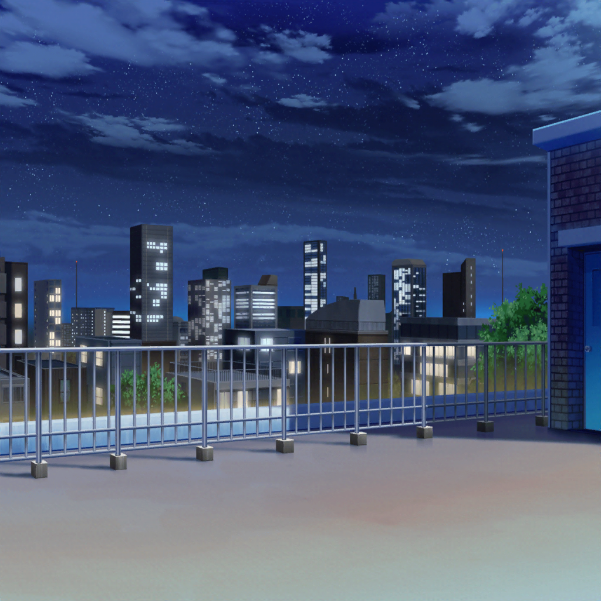

数時間後
羽丘女子学園 屋上
ひまり
は、は……はくしょんっ！
うー、寒い……
つぐみ
けっこう長いこと外にいるもんね。ひまりちゃん、大丈夫？
私の上着貸そうか？
ひまり
ううー、つぐ、ありがとう。大丈夫……
巴
けど、だいぶ外も暗くなってきたな……
今日はそろそろ終わりにするか？
蘭
そのほうがいいかも。
もう、手元が見えないくらい暗くなってきてるし……
モカ
うー。さぶいー……
蘭
モカ、大丈夫？ 風邪ひかないでよ。
早く片付けて帰ろう
巴
だいたい大丈夫かな？ それじゃそろそろ……
つぐみ
……あ！
ひまり
ん？ つぐ、どーしたの？
つぐみ
見て見て！ 空！ ほら、一番星が出てるよっ！
モカ
え？ どこー？
つぐみ
ほら、あの右のほうに……
ひまり
あっ、見つけたっ！
巴
おー、あれか！ つぐはホント、一番星見つけるの早いな〜
つぐみ
暗い夜空で、１つだけ光ってるからすぐにわかるよ！
モカ
真っ暗な夜空なんてフツー見ないよ〜。
てか、あたしまだ見つけられないんだけど……
巴
確かに……つぐ、ちょっと変わってるかもな？
つぐみ
そうかなあ？ あ、でもね！ 香澄ちゃんや蘭ちゃん達と
天体観測に行くまでは私もそうだったかも
つぐみ
みんなで天体観測に行ってから星に興味が湧いてきたの！
天体望遠鏡は高くてなかなか買えないけど……
夜、寝る前にベランダから星を見たりするようになったんだ
ひまり
へ〜。つぐにそんな趣味ができてたなんて
モカ
あたしも今度、ベランダから見てみようかな〜
つぐみ
うんっ！ やってみてっ！ この季節は少し寒いけど、
逆に頭がスーッとして気持ちいいよ！
蘭
気分転換になりそうだね
つぐみ
真っ暗で何も見えなくても、それでも
ちょっと見方を変えて『星を探してみよう』って思って眺めると
けっこう面白かったりするよ！
蘭
見方を変える、か……
巴
へえ〜。つぐの考え方、いいな！
蘭も一緒に天体観測に行ったんだろ？ 蘭は……
蘭
……
巴
蘭？
蘭
今のつぐみの話を聞いてて思ったんだけどさ
蘭
あたしは中２でみんなとクラスが離れて……
それから、屋上で１人で過ごすようになった
蘭
当時のあたしにとって屋上って、逃げ場で、
マイナスなイメージしかない場所だったんだ
ひまり
蘭……
蘭
けど、みんなとバンドをはじめてから、
屋上があたし達５人の拠点みたいになって……
今となってはあたし達にとってすごく大事な場所になったよね
蘭
マイナスなイメージしか持てなかった場所が、
気持ちが切り替わったことで、すごく大事な場所になった。
これって、今のつぐみの夜空の話に似てない？
つぐみ
あ……！
蘭
屋上に対する気持ちとか、夜空を見るようになったことも、
今思えば『視野が広がってた』ってことだったのかな、って
モカ
あたし達が気づかなかっただけで、
案外あたし達のペースでせいちょーできてたのかなあ〜？
モカ
ねえねえひーちゃん、もしかしてあたし、背とか伸びてる〜？
ひまり
もうっ、モカってばまた冗談言ってー！
それに、もし背が伸びてても
いつも会ってるからわかんないってば！
巴
けどもしかしたら……そんなちっちゃな成長を、
気づかないうちにちょっとだけできてたのかもしれないな
巴
アタシ達、いつも顔を合わせてたからこそ、
その成長に気づけなかったのかも
モカ
そうそう、そういうことよ〜
蘭
モカはチョーシよすぎ
巴
今回はつぐに気づかされたな
つぐみ
えっ、わ、私そんなつもりじゃなかったんだけど……
ちょっと嬉しいな
ひまり
やっぱりつぐってこういう大事なポイントで大事なことを
ぽんって話すよね〜
蘭
モカはそれに乗っかる係だね
モカ
え〜。もっとモカちゃんの重要性に気づいてほしいなあ〜
蘭・巴・ひまり・つぐみ
あははっ
蘭
……あたし達、今まで夕焼けしか見てこなかったけど、
夕焼けのあとには、夜空が広がってる
蘭
今日、その夜空も悪くないって気づけたよ
ひまり
うんっ！ これからはみんなで一番星、探していこう！
巴
そうやっていろんな日の空を見ていくうちに
また何か気づけるかもしれないな
つぐみ
うんっ！ そうだね！
巴
今日の夜空を見られたのはパスパレの人達のおかげでもある。
感謝しないとだな
蘭
……だね